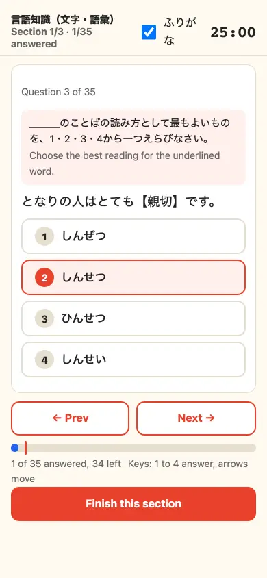
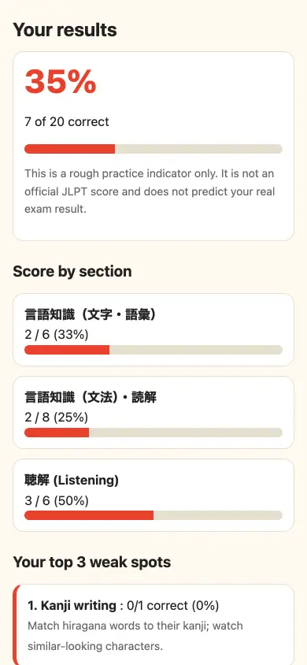
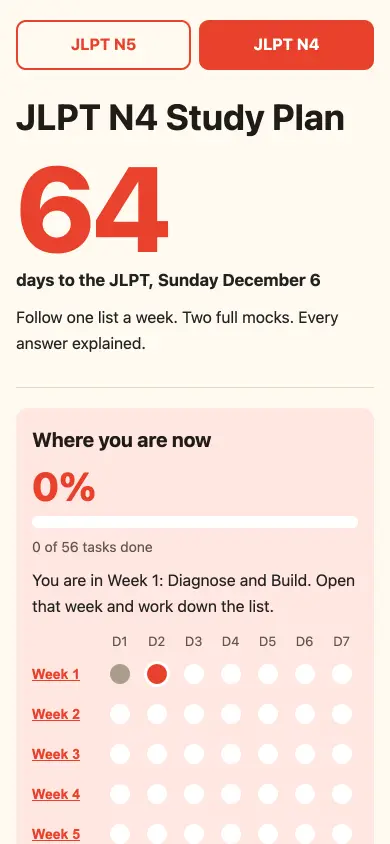

JLPT N4, Sunday December 6, 2026
the test
Where do you stand for JLPT N4 right now?
Take section 1 of a full-length mock on your phone, free. 25 minutes, the real time limit. You get a score and the three skills to study first.
Start section 1 freeNo sign-up. Nothing to install. Works in this browser.
Short on time? Try the 20-question mini mockDoes this sound like you?
- I know the grammar list. The reading passages still eat all my time.
- The listening plays once and it's gone. I'm guessing half of it.
- Two months left, and I still don't know what to study first.
Section 1 answers the last one in 25 minutes. You see which of 14 skills cost you the most points, and the plan tells you what to do about it this week.
What you see, on your phone
These are real screens from the N4 mock, not mockups.



How it works
- 1Open the mock on your phoneNo account. The link above starts it.
- 2Answer section 1 in 25 minutesVocabulary and kanji, 35 questions, the official time limit.
- 3Read your weak spotsScore by section, three skills to study first, and a plan for the weeks left.
Built on the official format
Listening is 35 minutes. Original questions in the same format and timing as the official test, written for N4 learners. Not the official test.
Then, only if you want the rest
Sections 2 and 3, the 28 listening clips, and the explanation for every answer choice are in the N4 pack.
Launch price $9, normally $29, for the first 50 learners. You decide after you have seen section 1. See what is in the pack.
Who made this
Yuuki, Japanese teacher in Tokyo. I teach N5 and N4 learners one-to-one online, and I wrote these questions for them, with the mistakes I see in lessons every week. See the lesson site.
64 days is enough, if you start with the right thing.
Twenty-five minutes now tells you what that is.
Start section 1 free